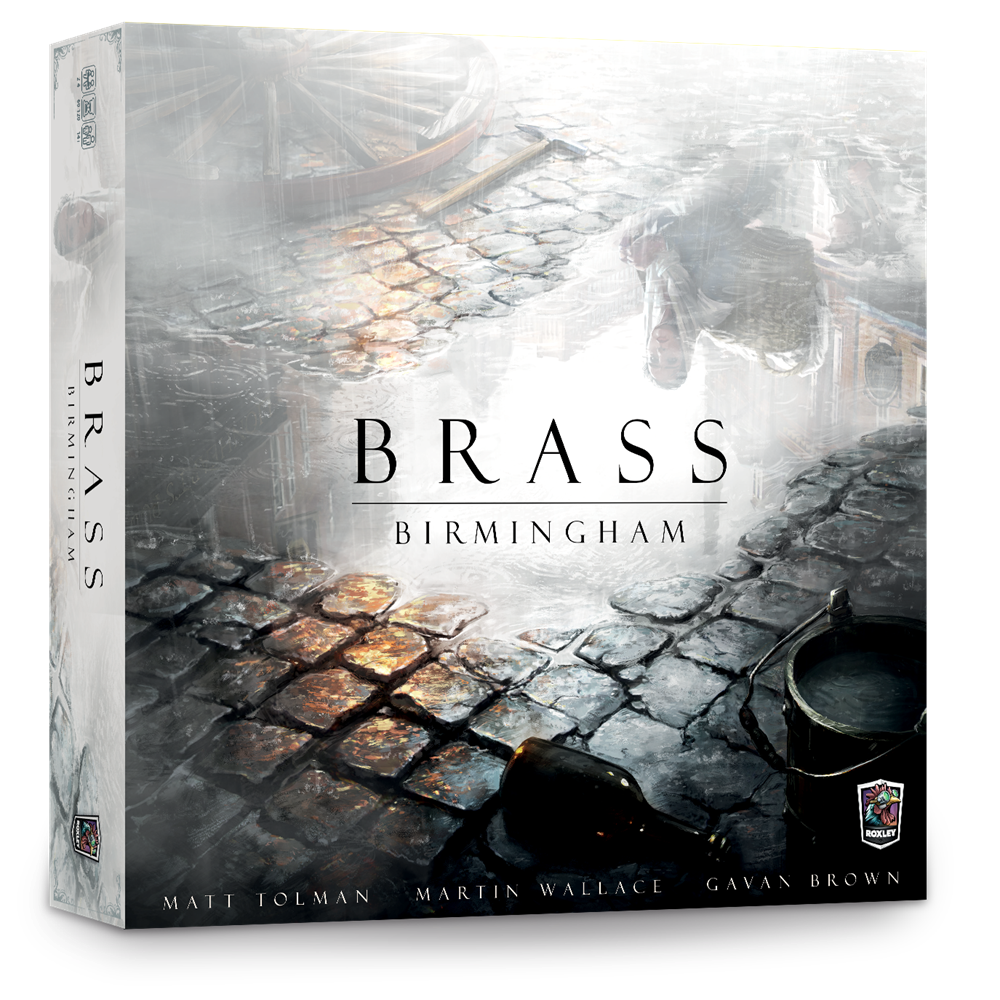

Brass: Birmingham
Gavan Brown, Matt Tolman, Martin Wallace · 2018

Verdict
Brass: Birmingham is one of the rare games whose design can carry the pressure of a number-one reputation. It is not necessarily my personal number one, but if a board-game ranking needs a single game at the top, Birmingham is a defensible answer.
More importantly, it is a must-play within modern strategy board games not because its ranking says so, but because it is an unusually complete design. It proves that a low rules load can still support a very deep economic system: the real depth is carried by the numbers underneath, not by a heavy rulebook.
This is exactly the kind of "small surface, large depth" design I value: the entry cost is kept as low as possible, while mastery remains meaningfully high. Those two goals often conflict, but Birmingham is one of the rare designs where they coexist.
That is also why my impression score sits at 94 rather than 95+: the replayability tradeoff is not my personal favorite, but the central design is strong enough that I would not let that preference drag the game out of the must-play tier.
Mechanics: Simple Actions, Dense Consequences
Birmingham's Mechanics score is high because its actions are easy to understand but never empty. Cards decide where you can act and what you must give up. Building changes your board, but also changes supply, access, income, timing, and other players' options. Routes are not just links on a map; they decide who can reach which part of the economy, and when.
This is why Mechanics gets 10 and carries the highest weight at 25%. The game is not simply "light on rules"; it is dense in consequence. It reaches a very precise middle point: most players who are willing to try medium-weight strategy games can learn and play it, but playing it well still has a real threshold and a high ceiling.
Numerical Depth And Replayability
Birmingham's depth is not stored in rule exceptions. The cards are almost disarmingly simple; building and rail actions are easy to understand; a single action card can explain most of what a player does; and the rulebook is thin. None of that thinness is where the depth disappears. The depth comes from the numbers underneath.
Tile counts, building costs, resource circulation, income pressure, and route timing all show how precise the numerical design is. The game often leaves you exactly one coal, iron, beer, route, or action short, cutting off a plan that felt perfectly continuous in a way that is both frustrating and funny. This is where the low entry cost matters again: players do not need to learn very much before the mastery problem begins. In game-design terms, this is emergence in a particularly numerical form: the rules do not list those difficult positions one by one, but resource circulation, costs, and routes produce them through their interaction. That is why Depth/Complex reaches 95/100. It does not reach 100/100 because, once the main answers are understood, the strategic space becomes more bounded than games whose repeated plays keep generating new structures. The design has a high ceiling, but not an endlessly expanding one.
Replayability is the other side of that restraint. Birmingham does not have a huge card pool, a deck-building arc, or randomness that regularly changes the basic way you think. Its opening and hand variation are not enough to keep reshaping the strategic problem for very long; once you understand the main questions and the major routes, later games can feel more similar than fresh. That is why Replayability stays at 80/100 rather than joining the game's 90+ dimensions. It is still a good score, but it marks a real ceiling on long-term freshness. The same restraint that limits surprise after mastery also keeps the rules short, the teaching burden low, and the system readable. I personally care a lot about replayability, yet for the broader player base, that accessibility is a major part of why the design succeeds.
Player Count And Interaction
Four players is clearly the complete experience. The three-player game is scaled down, but very well handled: it feels more like a proportional contraction than a crude removal of worker spaces. The impact on the experience is very small, because the core tempo, resource pressure, and mutual restraint remain mostly intact. That scaling is one of the game's clever design achievements.
Birmingham is not a pure interaction game, but its interaction is better designed than raw volume suggests. Most of it comes from route competition, shared resource use, and tempo. At a high level, a tempo swing can certainly decide the result, but high-level play makes many small edges decisive. In broader terms, Birmingham's interaction is meaningful without usually overwhelming the economic puzzle.
The turn-order mechanism is the most interesting part. It makes fairness subtle and adds planning space without relying on blunt area control. Birmingham's interaction also has a cooperative edge: using shared resources can help another player convert assets, and opening or occupying a route can reshape opportunities for more than one player. That competition-cooperation tension is a major reason Interactivity rises to 90/100 and deserves a 12% weight.
Balance And Flow
Balance is one of Birmingham's strongest qualities, and it works on two levels. Numerically, the game is top-tier: tile counts, building costs, resources, income pressure, and route timing are tuned tightly enough to create pressure without collapsing into one obvious answer. This is why Balance can receive a full 10 rather than just a high score.
On the play side, turn order is the clearest balance risk, and this is where the turn-order mechanism mentioned above matters. Because spending affects future order, powerful turns carry a tempo cost, while restrained turns can gain timing compensation. That does not remove all advantage, but it prevents a stable first- or last-player edge from dominating the game. The 14% weight reflects this role: balance is not a secondary fairness check here, but the condition that lets the whole economy stay tight without becoming scripted.
The flow is also excellent. Downtime is short, and the amount of calculation is usually just enough for players to plan during other turns. The game asks for thought, but it rarely turns waiting into dead time. That supports 93/100 in Flow and a substantial 12% weight.
Theme, Art, And Audience
Theme is a double-edged part of Birmingham. On the positive side, the industrial setting is not pasted on at all. Industrial expansion, peaceful area control, rails, and resource networks fit the rules so naturally that the game becomes easier to understand than it first appears.
The negative side comes from the same source. The industrial theme looks hard before the rules actually are hard, and it can scare players away before they discover that the rules are fairly intuitive and that the real difficulty lies in the numerical calculation. That is why Theme is 7.5: the integration is strong, but the audience cost is real. The art itself is not the issue; it represents the theme accurately and beautifully, which supports an 8.8 for Aesthetics. Both carry a 7% weight: lower than the structural systems, but not negligible, because theme and art shape the first contact with the game even when they are not the main engine.
Innovation And Completion
Birmingham is not innovative in the sense of a single unprecedented mechanism. It is not a flash-of-inspiration design. Its strength is closer to a work of integration: every mechanism sits in the right place, and every lever is pulled with the right amount of force.
In that sense, it feels calculated rather than improvised. The rules are few, the pressure is enough, the resources are tight, the interaction is moderate, and the flow remains smooth. That kind of completion deserves respect, but it should not automatically become a top innovation score. Innovation stays at 70/100 with a 5% weight. Originality is not Birmingham's main strength, but it still affects the overall evaluation and should not disappear from the weighted score. Its greatest strength remains integration and tuning.
Recommendation
Birmingham is suitable for almost anyone who has already touched medium-weight strategy games, and for anyone who wants to step into that space. It is at least worth one serious try. Players should not be scared away by the industrial style or by the pressure of its BGG ranking.
The main group I would not recommend it to is players who only want party games, light social play, or no economic calculation at all.